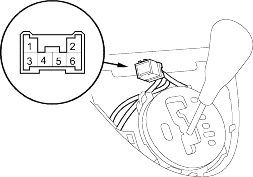
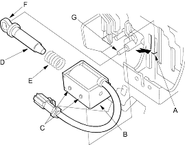

- Remove the shift lever console panel.
- Remove the shift lock solenoid connector from the shift lever bracket base, then disconnect the shift lock solenoid connector.

- Connect the No. 1 terminal of the shift lock solenoid connector to the battery positive terminal and connect the No. 3 terminal to the battery negative terminal.
- Check that the shift lever can be moved from the
 position. Release the battery terminals from the shift lock solenoid connector. Move the shift lever back to the position and make sure it locks.
position. Release the battery terminals from the shift lock solenoid connector. Move the shift lever back to the position and make sure it locks.
NOTE: Do not connect power to the No. 3 terminal (reverse polarity) or you will damage the diode inside the solenoid. - Check that the shift lock releases when the shift lock release is pushed and check that it locks when the shift lock release is released.
- If the shift lock solenoid does not work, replace it.
- Remove the centre console panel and centre console (see page 20-73).
- Disconnect the shift lock solenoid connector (2P) and remove it from the shift lever bracket base.
- Push the lock tab (A), pry the shift lock solenoid (B) to clear the projected tips (C) with a screwdriver and remove the shift lock solenoid.

- Install the shift lock solenoid plunger (D) and plunger spring (E) in the new shift lock solenoid.
- Install the shift lock solenoid by aligning the joint (F) of the shift lock solenoid plunger with the tip (G) of the shift lock stop.
- Connect the shift lock solenoid connector and install it on the shift lever bracket base.
- Install the centre console and console panel (see page 20-73).